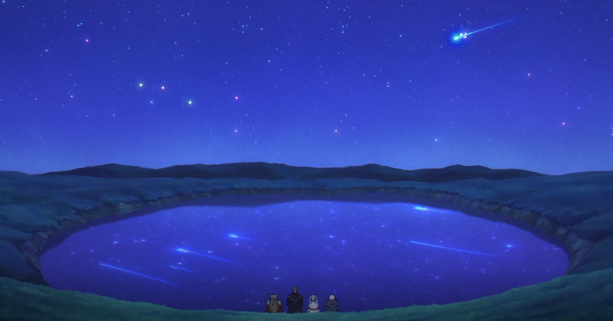
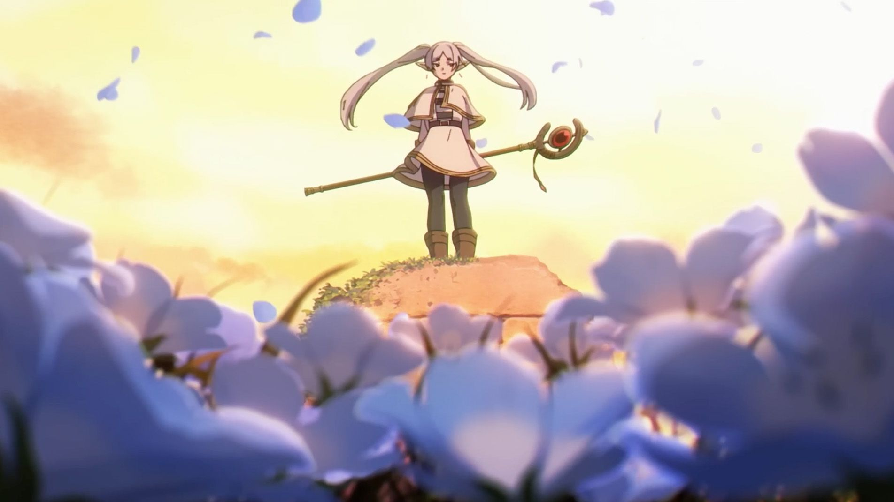

Animation
Frieren: Beyond Journey’s End impresses with its beautifully crafted animation, which perfectly complements the series' contemplative and emotional tone. The art style blends soft, natural color palettes with intricate background designs that evoke a sense of nostalgia and timelessness, reflecting the passage of years in the story. Character animations are fluid, especially in quieter, more intimate moments, where subtle facial expressions and small gestures convey complex emotions. The animation team also excels in depicting magical scenes, using vibrant, ethereal effects that feel both otherworldly and grounded in the characters' personal journeys. Action sequences, though not the focus, are skillfully executed, with fluid movement that adds weight and impact to each scene. Overall, the animation in Frieren is understated yet refined, enhancing the emotional depth of the story while creating a visually immersive world that draws viewers into its reflective, serene atmosphere.
Critical Reception/conclusion
"Frieren: Beyond Journey's End" has been praised for its unique storytelling and emotional resonance. Critics highlight the depth of character development and the series’ ability to explore profound themes of life, loss, and the passage of time. Readers appreciate how the narrative balances adventure with introspective moments, making it a compelling read. Frieren: Beyond Journey's End" offers a refreshing perspective on the fantasy genre, focusing on the emotional journeys of its characters. Whether you're a long-time anime/manga consumer or new to the world, this series is sure to leave a lasting impact.
